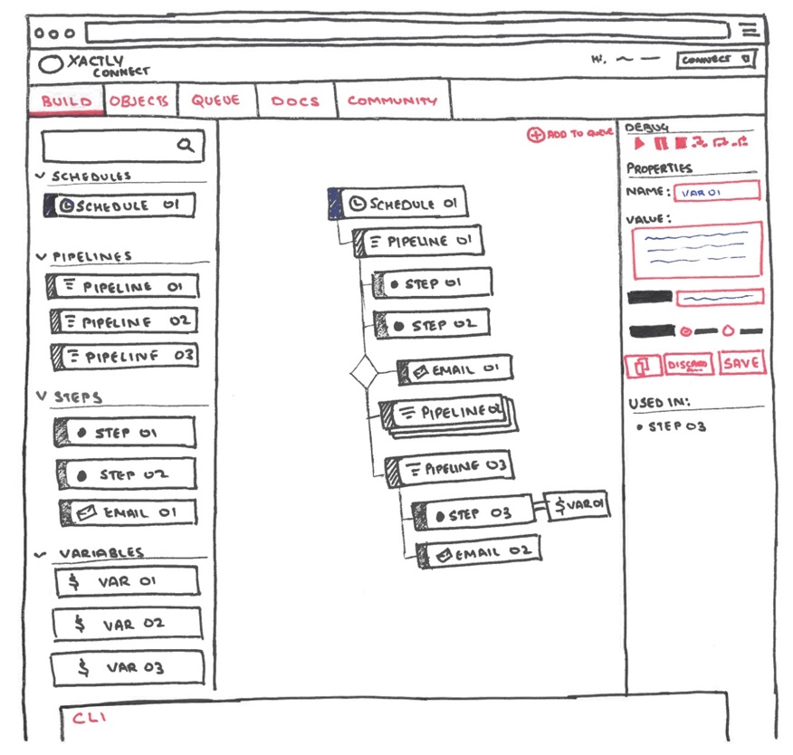

Introduction
During the summer of 2016, 9 months after I started studying HCDE at the University of Washington, I got the opportunity to put my skills to the test at Xactly Corporation in San Jose. Xactly is an enterprise SaaS company, providing industry leading sales compensation management tools for companies of all sizes. I was hired into a fantastic Product Management team as a UX design intern, the first UX designer in the company. Being the only designer on the team for over half my internship period, I had to be quick on my feet, take on multiple projects simultaneously. I needed to communicate and justify design decisions to various teams including product management and engineering.
All of the projects mentioned below are ongoing and I'm actively working on most of them. While I cannot go into details and specifics, I hope you enjoy reading about the challenges I faced, the processes I followed and the lessons learnt.
Day 01
And so it began...
I found myself staring into the eyes of a beast I had never faced before. I was the only designer, designing for products that operate in a space that I haven't even remotely begun to understand. This was my first time working in a full-time UX role - working on products that haven't had a UX designer before. It would be an understatement if I said I was a bit nervous. I felt the pressure of having to introduce a design cog into a long running machine, all while I figure things out myself. I brushed off my apprehension; I was confident in my ability to learn fast, and even more so in my design process. Over my 3 months as an intern, and till now as a part-time designer, I've learnt and grown so much! I learnt about sales compensation, and how complex it could be. I've learnt about how enterprise UX is a totally different ball game. I learnt how to communicate design to different people. I learnt fast, not just because I had to, but because I had an incredible team that helped me thrive every step of the way.
Most of all, I learnt that 'User Centered Design' isn't just a way of designing products. It's a way of communicating, working, and growing.
Xactly Connect UI
Learn Fast, be confident!
On week 1, I sat through a 6 hour cross-department kick-off meeting for a new product that was being developed at Xactly. This was great because I could be a part of the first discussions, and bring a design perspective right from the start. After sitting through the 6 hours, taking in a lot of information about stuff I didn't really understand, I came out feeling a bit overwhelmed. I needed to know more about the product, the users and the problem to be solved before I can really design anything. I requested a follow-up with the product manager, and we went over the details of the products - what it was meant to do, and what all those 'technical terms' meant. I felt like at that point, everyone was a bit unsure of how the UI should look. As any designer would, I reached for my trusty sharpie and a stack of papers. I sketched many interface ideas.
Validating Early was the most important thing at this point. I wanted to make sure I was designing for the problem, and I understood everything right. I checked in with various people from the team constantly as I designed, making sure I was on the right path. A week later, I was back in the conference room with the engineers, database architects and product managers. I presented my wonderfully squiggly sketches and walked through how I envisioned the product would work, trying not to get too nervous about all the narrow eyes and stern nods. Once I was done, there was a lot of discussion - 'How would this work?', 'What if we did it that way?', 'How will this sit within our existing system?'
Coming out of that meeting, I wasn't sure what to think, but the PM gave me another important lesson to learn -
"Don't wait for a pat on the back. When you get people excited and talking, that's when you know you've done a good job."

My wonderfully squiggly sketch.
Xactly Incent Android
User Centered Workflow
I was also taking point on the design for Xactly's Android app. Development of v1 had begun a few weeks before I had started, so it was a catch-up game right from the start. The development team was also located in India. Working with a remote dev team had it's own set of challenges. Figuring out the best way to communicate designs across 7,500 miles was daunting at first. I tried and failed fast. I needed to acknowledge the problem - and I decided to take a user centered approach to solve it. Every step of the way, as I tried something, I would talk to the developers to see what worked for them, and what didn't. Next time around, change what doesn't work and test again. Couple of passes in, and we had a good system going - Using interactive specs for specific screens, google docs to keep track of base components and styles, and google sheets for keeping track of design issues.
User centered design can be applied to so many other aspects. It made our workflow, and collaboration so much easier - and we continue to improve it.
Working in the real world
Lessons learnt from working on real products
Working in the real world is so different from working on school projects, and this is never more apparent than at your first job. Working as part of a company means there are so many more moving parts that you need to acknowledge and account for. The stakes are also much higher now!
One of the most valuable lessons I learnt was to not get attached - I was already pretty good at this, coming from a TV animation background, but being prepared is important. Not all your design ideas go through. In fact, they go through a lot of scrutiny and get ripped apart, but what comes out on the other side is usually much stronger. I learnt to listen to everyone. Even if the articulation isn't clear from a design perspective, it was my job as a designer to dig deeper and find the underlying reason.
Perhaps the biggest change from school projects was that these products have been out in the world for years! While the young and excited designer in me wanted to change everything, I learnt the importance of strategy early on. As much as my design instinct told me to redesign, strategy to drive that change is more important, because change is difficult for users, and creating new UX patterns will only cause confusion and frustration. Even if the design is better, it's not what the users are used to. 'Understanding your users' takes on a whole new meaning when working on a product that has been out in the world for years.
Looking Forward
Ready to take on the world
One incredible internship experience later, I've come out on the other end stronger than ever. Being a designer means having empathy, not just with your users, but with everyone you work with. Everyone brings different experiences and perspectives to the table, and that is an incredibly valuable resource for a designer.